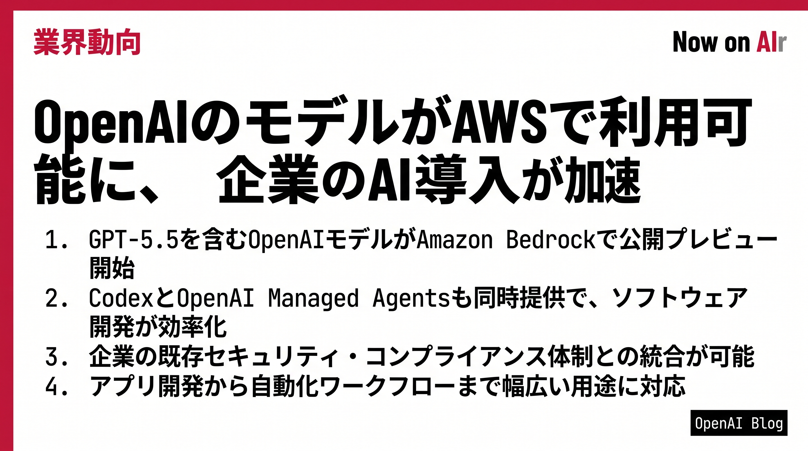

OpenAIとAWSが戦略的パートナーシップを拡大。GPT-5.5やCodex、マネージドエージェントがAWS環境で利用可能になり、企業のセキュアなAI導入が進む。
Microsoftとの独占契約を解除したOpenAIが、AWSでGPT-5.5やCodexを公開。クラウド市場でのAI競争が本格化し、企業の選択肢が広がる。
GitHubがCopilot利用料を従量課金制へ切り替え。トークン消費量に基づく細かい課金で、AI利用の急増による採算悪化に対応する。
Anthropicが非技術者向けAIエージェント「Cowork」をリリース。領収書整理や経費報告など事務作業を無コード自動化でき、AI生産性ツール市場で本格競争へ。
JALが東京・羽田空港でヒューマノイドロボットの荷物搬送試験を開始。労働力不足が深刻な空港運営で、AIロボット導入が本格化する。
インターネット・アーカイブの分析で、2025年半ばまでに新規公開サイトの35%がAI生成コンテンツであることが判明。ネット上のアイデア多様性が低下し、感情的な統一性が進む。
Mistral AIがWorkflows（業務自動化オーケストレーション層）を公開プレビューで提供。複数AIエージェント連携で本番環境対応が可能に。
Anthropicが国防総省のAI無制限利用（国内監視・自動兵器除外条件）を拒否したのに対し、Googleが国防省向けAI提供で新規契約を締結。AI企業の政治・倫理的立場分岐が鮮明に。
毎朝06:30 JSTにAIエージェントが自律起動し、RSS・ニュースソースを収集・要約・スライド化してGitHub Pagesに自動配信。人間の介入ほぼゼロで動くモーニングディスパッチです。
PIPELINE: RSS → CLAUDE HAIKU → GEMINI SLIDES → GITHUB PAGES